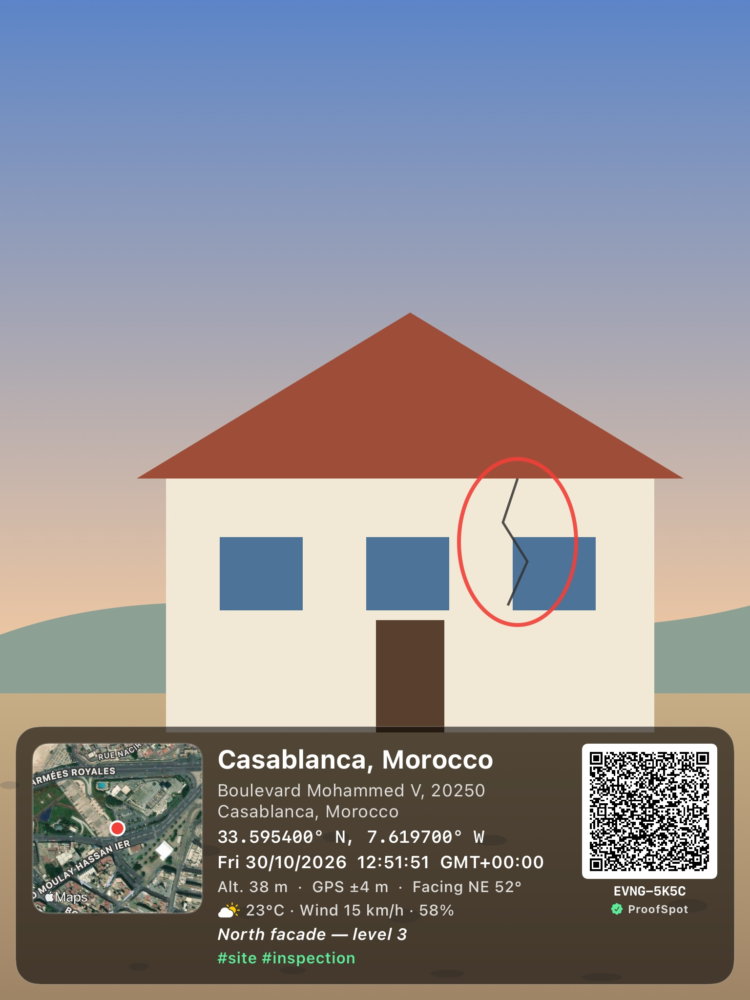
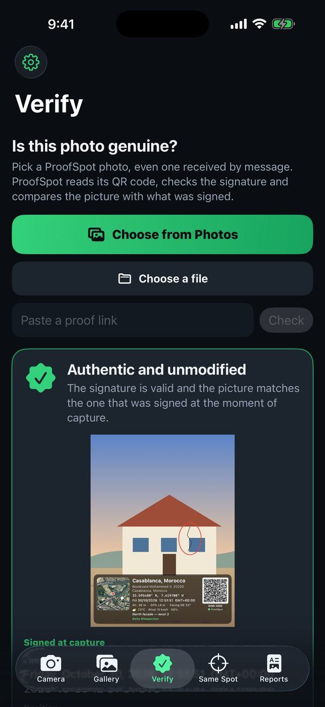
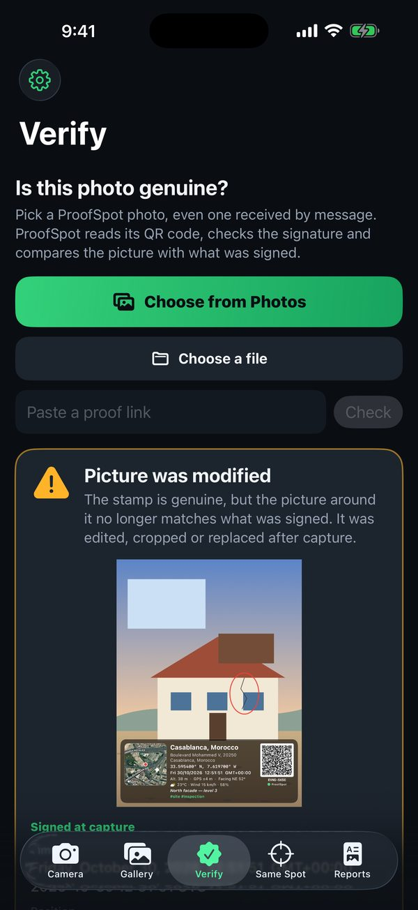
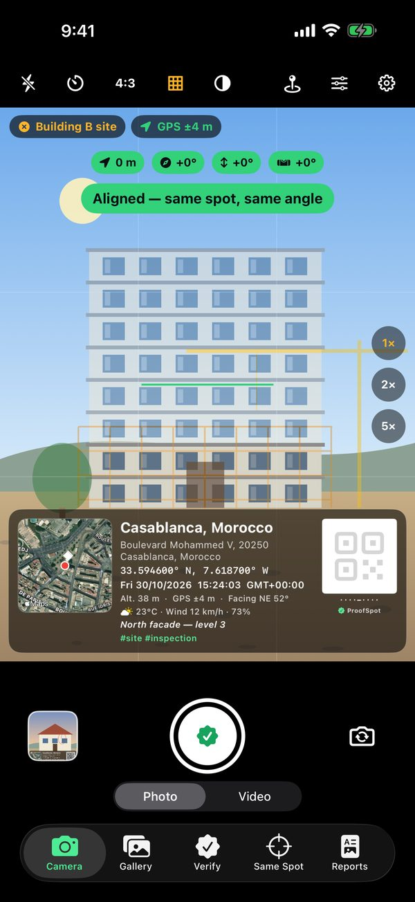
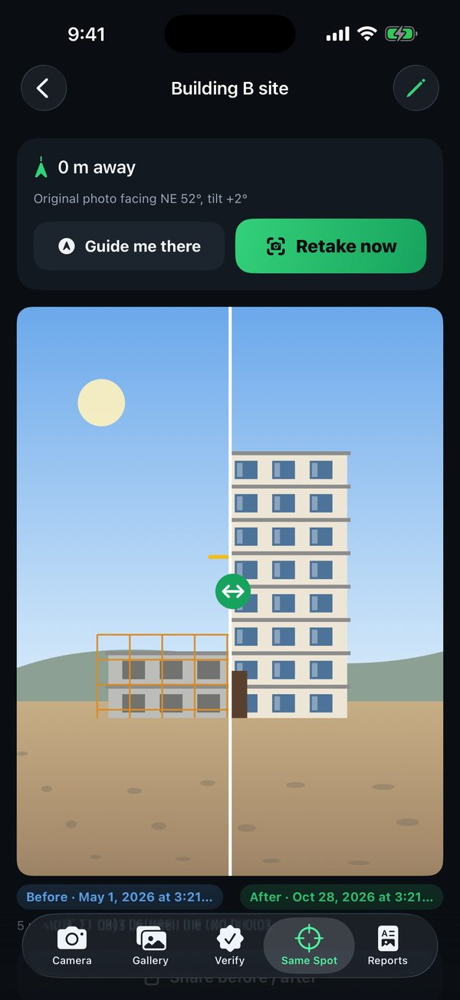
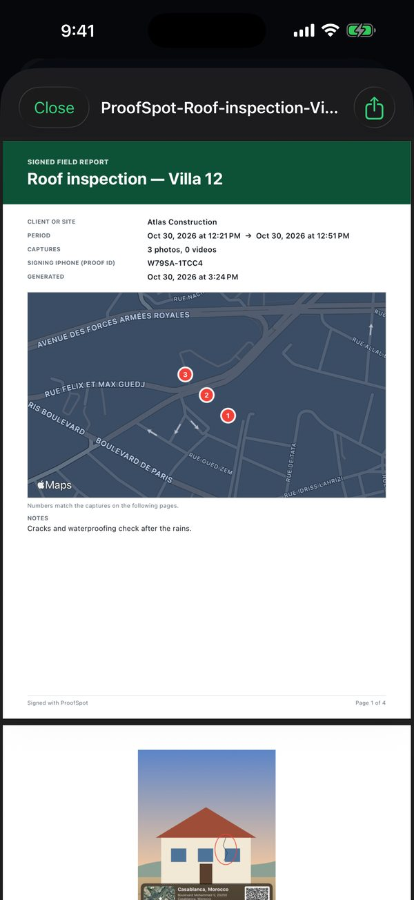

How ProofSpot proof works
A short demo for App Review. A date printed on a photo proves nothing, because any photo editor can change it. ProofSpot signs each capture on the iPhone, so anyone can check when and where it was taken and whether the picture was edited.
1A photo signed by ProofSpot


This is the original file saved by the app. Its QR code (bottom right of the stamp) holds the signed record. Scanning it with any phone camera opens the first link below.
- Proof code printed on the photo
- EVNG-5K5C
- Signed time
- Friday, October 30, 2026, 12:51:51 UTC
- Signed position
- 33.595400° N, 7.619700° W ±4 m
The Simulator has no GPS, so this time and place are sample values from the app's demo mode. On an iPhone they come from the clock and GPS at the moment of capture.
✔ Check this signature in your browserThe page verifies the ECDSA P-256 signature with WebCrypto. No account, no server. ✖ Same proof with the time moved by one secondAny change to the time or place breaks the signature.2An edited picture is detected
The signature also covers a fingerprint of the picture, outside the stamp. In the app's Verify tab, the original passes. A copy where part of the picture was painted over, with the stamp and QR code left intact, is reported as modified.


3Same Spot and field reports
Same Spot brings the user back to a saved position: the first photo appears as a ghost, with distance, compass, tilt and level guides that turn green when aligned. Before and after photos can then be compared. Field visits become PDF reports with a map and the SHA-256 fingerprint of every file.



4Video
Recorded on the iOS Simulator, which has no camera: the pictures are painted samples, and they go through the app's real stamp, signature and verification code.